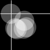
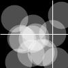

This tutorial is the Render Techniques chapter from Processing: A Programming Handbook for Visual Designers and Artists, Second Edition, published by MIT Press. © 2014 MIT Press. If you see any errors or have comments, please let us know.
By default, everything is drawn to the primary display window. Sometimes, however, there is an advantage in drawing to another graphics surface. All of the drawing features available in the display window can be applied to an offscreen drawing surface and then drawn back into the display window as an image or texture. This technique makes it easier to imagine a program as a stack of layers similar to the technique used in photo editing and vector drawing software. Similarly, drawing surfaces in Processing can be moved around, drawn using blending effects and transparency, and drawn in different orders to change how the layers combine. Before the discussion moves to multiple drawing surfaces, this chapter starts with a discussion of the different renderers used by Processing.
This short text provides a brief history of the digital printing technologies that have led to these new techniques. It presents examples of software written to produce print output, and discusses a few common contemporary print technologies. The industry surrounding digital printing is full of trademarked names and buzzwords, so this text aspires to demystify some of the terminology and provide pointers to additional information. The content that follows is tailored for printing at home or working with a vendor to produce small editions.
Processing has three primary renderers: the default renderer, P3D, and P2D. The default renderer is used for the majority of the programs in this book; it’s for 2D drawing. It’s used when one of the other renders aren’t defined as the third parameter to size(). The P3D renderer for drawing in three dimensions is discussed in the 3D Drawing chapter (p. 21). The P2D renderer is an alternative 2D renderer that is substantially faster than the default renderer for most tasks, but it sacrifices some visual quality for speed. Both P2D and P3D utilize a software specification called OpenGL that is supported on many GPUs (the Graphics Processing Unit on a computer’s graphics card) to accelerate drawing. The visual quality of the OpenGL renderers, P2D and P3D, can be adjusted with the smooth() and hint() functions.
All programs have smoothing enabled by default, but an optional parameter to smooth() can improve the quality of the OpenGL rendering with P2D and P3D. For instance, smooth(4) will enhance the quality of anti-aliasing to improve the image quality. The optional parameters from low to high are 2, 4, and 8, with 2 as the default. These options are only available on graphics cards that support them and may slow a program down or require more memory.
The hint() function is available for advanced users to modify details about how geometry is drawn to the screen. By default, when rendering a scene, each renderer makes decisions about drawing order, shape occlusion, perspective distortion, and so on based on what is more likely to be useful and efficient for the largest number of users. Hints are used to change these defaults if other decisions are better for a specific program. There is a single hint() function, but the parameters for it enable and disable a range of rendering decisions. For example, to make lines appear in perspective, write hint(ENABLE_STROKE_PERSPECTIVE) and to turn this back off, write hint(DISABLE_STROKE_PERSPECTIVE). This feature is not enabled by default because it’s slower and will make lines in predominantly flat scenes appear strangely. But it’s a useful necessity when drawing many lines that make use of a large 3D space. The parameters to hint() change over time, so please consult the Processing reference for the current options.
background(0);
ellipse(50, 50, 75, 75);
To draw the same shape into a new surface, first create a new PGraphics object, then draw to it by typing the name of the object and dot operator before the name of the drawing functions. This new surface is placed in the display window with the image() function.
PGraphics circle = createGraphics(100, 100);
circle.beginDraw();
circle.background(0);
circle.ellipse(50, 50, 75, 75);
circle.endDraw();
image(circle, 0, 0);
The createGraphics() function generates the new drawing surface at the size in pixels defined by the parameters. This step only happens once to initialize it. The beginDraw() function is used to start working with a custom PGraphics object and the endDraw() method is used to stop. Both are needed each time a change is made. Finally, the surface may be drawn to the display window with the image() function. All of the parameters to image() to control the position and size may be used to change the way the surface is drawn.
In practice, new PGraphics layers are most often used with programs that have setup() and draw(). To work together, the PGraphics object is declared as global, it is created inside setup(), then can be modified in draw().
PGraphics circle;
void setup() {
size(100, 100);
circle = createGraphics(100, 100);
}
void draw() {
circle.beginDraw();
circle.background(0);
circle.ellipse(50, 50, 75, 75);
circle.endDraw();
image(circle, 0, 0);
}
Based on this example, the most obvious differences to working with PGraphics objects are the additional lines of code and the extra step of prepending each drawing function with the name of the object. This example is simplified to demonstrate the mechanics of the technique, but it doesn’t do anything to justify it. The following example reveals a typical issue that creating a new drawing surface can fix. The goal of the program is to use a crosshair to show the position of the cursor and to draw a new circle to the screen each time the mouse is clicked. For the circles to accumulate on screen, the background() function isn’t used. This has the unintended effect of also accumulating the crosshairs as seen in this code:
void setup() {
size(100, 100);
background(0);
noCursor();
}
void draw() {
stroke(255);
line(mouseX, 0, mouseX, height);
line(0, mouseY, width, mouseY);
}
void mousePressed() {
noStroke();
fill(255, 100);
ellipse(mouseX, mouseY, 40, 40);
}
To allow for the circles to accumulate in the display window, but to have a different effect for the crosshairs, a new drawing surface is created to render the circles, while the crosshairs are drawn in the main display window. The surface with the circles is redrawn each frame in draw(), followed by the lines so they are on top of the circles layer.
PGraphics circles;
void setup() {
size(100, 100);
circles = createGraphics(width, height); circles.beginDraw();
circles.background(0);
circles.noStroke();
circles.fill(255, 100); circles.endDraw();
noCursor();
}
void draw() {
image(circles, 0, 0);
stroke(255);
line(mouseX, 0, mouseX, height);
line(0, mouseY, width, mouseY);
}
void mousePressed() {
circles.beginDraw();
circles.ellipse(mouseX, mouseY, 40, 40);
circles.endDraw();
}
To allow for the circles to accumulate in the display window, but to have a different effect for the crosshairs, a new drawing surface is created to render the circles, while the crosshairs are drawn in the main display window. The surface with the circles is redrawn each frame in draw(), followed by the lines so they are on top of the circles layer.
The setup() is this example defines the default values for the new drawing surface. The background is set to black, the fill color is set to transparent white, and the stroke is turned off. These attributes apply to the circles layer for the entire program, so each time a circle is drawn inside mousePressed(), it draws without a stroke and with a transparent white.
Another good reason to use a PGraphics object is to render geometry a single time, but to display it many times within the program as a texture unit. The following example draws an ellipse at a random location on an surface that’s only 50 × 50 pixels, then follows to draw that surface in a grid by placing the image() function inside a nested loop.
PGraphics tile;
void setup() {
size(700, 100);
tile = createGraphics(50, 50);
background(0);
}
void draw() {
runTile();
for (int y = 0; y < height; y += tile.height) {
for (int x = 0; x < width; x += tile.width) {
image(tile, x, y);
}
}
}
void runTile() {
float x = random(20, tile.width-20);
float y = random(20, tile.height-20);
tile.beginDraw();
tile.noStroke();
tile.fill(0, 20);
tile.rect(0, 0, tile.width, tile.height);
tile.fill(255);
tile.ellipse(x, y, 10, 10);
tile.endDraw();
}
This example clarifies two things about working with PGraphics objects. First, each object has its own width and height field, just like the main display window. Second, while the drawing functions such as noStroke() and rect() are applied to the drawing surface through the dot operator, variables still belong to the main program. Notice that the x and y variables in the runTile() function aren’t defined as belonging to the tile object.

PGraphics cube;
void setup() {
size(100, 100, P3D);
cube = createGraphics(width, height, P3D);
}
void draw() {
background(0);
drawCube();
image(cube, 0, 0);
}
void drawCube() {
cube.beginDraw();
cube.lights();
cube.background(0);
cube.noStroke();
cube.translate(width/2, height/2);
cube.rotateX(frameCount/100.0);
cube.rotateY(frameCount/200.0);
cube.box(40);
cube.endDraw();
}
As implied by the previous example, the only rule to remember about selecting renderers for new drawing surfaces is to match the renderer defined in size() and createGraphics(). The exception to this rule is using the default renderer and P2D as alternate options when P3D is the main renderer defined in size(). For example, the following code won’t run because it’s not possible to run a 3D renderer when the default is used as the primary renderer:
PGraphics cube;
void setup() {
size(100, 100);
cube = createGraphics(width, height, P3D); // Error
}
void draw() {
cube.beginDraw();
cube.box(40);
cube.endDraw();
image(cube, 0, 0);
}
PGraphics cubeA;
PGraphics cubeB;
void setup() {
size(200, 200, P3D);
cubeA = createGraphics(width, height, P3D);
cubeB = createGraphics(width, height, P3D);
}
void draw() {
background(0);
drawCubeA();
drawCubeB();
float alphaA = map(mouseX, 0, width, 0, 255);
float alphaB = map(mouseY, 0, height, 0, 255);
tint(255, alphaA);
image(cubeA, 0, 0);
tint(255, alphaB);
image(cubeB, 0, 0);
}
void drawCubeA() {
cubeA.beginDraw();
cubeA.lights();
cubeA.clear();
cubeA.noStroke();
cubeA.translate(width/2, height/2);
cubeA.rotateX(frameCount/100.0);
cubeA.rotateY(frameCount/200.0);
cubeA.box(80);
cubeA.endDraw();
}
void drawCubeB() {
cubeB.beginDraw();
cubeB.lights();
cubeB.clear();
cubeB.noStroke();
cubeB.translate(width/2, height/2);
cubeB.rotateX(frameCount/150.0);
cubeB.rotateY(frameCount/250.0);
cubeB.box(80);
cubeB.endDraw();
}
Move the cursor around in the display window to modify the transparency of each layer. The visibility of each other is set by the tint() that precedes the image() function. A quick look at the drawCubeA() and drawCubeB() functions reveal there might be a better way to write the program. Both functions are nearly identical with three differences: the name of the surface to draw to, the rotation amount for the x-axis, the rotation amount for the y-axis. These values can be passed into a function as parameters so a single function can be used in place of two. The unknown syntax is how to pass in a PGraphics object as a parameter to a function. Fortunately, it follows the same pattern as all parameters, the name of the data type is followed by a variable name. The updated program follows.

PGraphics cubeA;
PGraphics cubeB;
void setup() {
size(200, 200, P3D);
cubeA = createGraphics(width, height, P3D);
cubeB = createGraphics(width, height, P3D);
}
void draw() {
background(0);
drawCube(cubeA, 100, 200);
drawCube(cubeB, 150, 250);
float alphaA = map(mouseX, 0, width, 0, 255);
float alphaB = map(mouseY, 0, height, 0, 255);
tint(255, alphaA);
image(cubeA, 0, 0);
tint(255, alphaB);
image(cubeB, 0, 0);
}
void drawCube(PGraphics cube, float xd, float yd) {
cube.beginDraw();
cube.lights();
cube.clear();
cube.noStroke();
cube.translate(cube.width/2, cube.height/2);
cube.rotateX(frameCount/xd);
cube.rotateY(frameCount/yd);
cube.box(80);
cube.endDraw();
}
When the cubeA object is passed into the drawCube() function in the second line of draw(), the drawCube() functions renders into that object. When the cubeB object is passed into the drawCube() function in the third line of draw(), the drawCube() function renders into that object. This ability is the power of the revised program; it shows a modular technique for drawing into any PGraphics object through parameterization.
The next example is similar to the previous example, but it blends the two drawing surfaces together with the blendMode() function. The blend mode is defined at the end of setup() and is then applied for the duration of the program.
PGraphics cubeA;
PGraphics cubeB;
void setup() {
size(200, 200, P3D);
cubeA = createGraphics(width, height, P3D);
cubeB = createGraphics(width, height, P3D);
blendMode(DARKEST);
}
void draw() {
background(255);
drawCube(cubeA, 100, 200);
drawCube(cubeB, 150, 250);
image(cubeA, 0, 0);
image(cubeB, 0, 0);
}
void drawCube(PGraphics cube, float xd, float yd) {
cube.beginDraw();
cube.lights();
cube.clear();
cube.noStroke();
cube.translate(cube.width/2, cube.height/2);
cube.rotateX(frameCount/xd);
cube.rotateY(frameCount/yd);
cube.box(80);
cube.endDraw();
}
In general, blend modes and controlling transparency with tint() are the primarily ways to easily mix the pixels from two PGraphics objects together in the main display window. Try experimenting with this using the last example in the chapter. Keep in mind that the default blend mode is blendMode(BLEND) to reset to the way a program draws. Also, some blend modes don’t work with all background values. For example, if the background is white, then using blendMode(LIGHTEST) will always be a white screen because no pixel will ever be lighter than the background value. Conversely, blendMode(DARKEST) and blendMode(MULTIPLY) don’t have results with a black background.